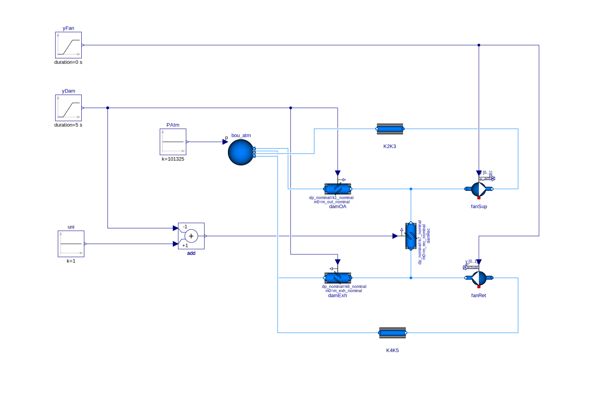

Linear Actuators Models
Related to issue #1298.
Linearization of Flow Characteristic
The relationship between the lumped flow coefficient (for both damper and fixed flow resistance) \(k=\dot{m}/\sqrt{\Delta p}\) varies linearly with the filtered control input signal between \(k_{min}\) (damper fully closed: leakage) and \(k_{max}\) (damper fully open).
partial model PartialDamperExponential
...
y_char_linear = if linearized then sqrt(y_actual) else y_actual;
if char_linear_pro then
k = y_char_linear * (k_max - k_min) + k_min;
kDam = if (kFixed > Modelica.Constants.eps) then
sqrt(1 / (1 / k^2 - 1 / kFixed^2)) else k;
else
kDam=sqrt(2*rho)*A/Buildings.Fluid.Actuators.BaseClasses.exponentialDamper(
y=y_actual, a=a, b=b, cL=cL, cU=cU, yL=yL, yU=yU);
k = if (kFixed>Modelica.Constants.eps) then sqrt(1/(1/kFixed^2 + 1/kDam^2)) else kDam;
end if;Yields a linear relationship between \(\dot{m}\) and \(y_{actual}\) when the model is exposed to constant pressure boundary conditions.
In case of time varying pressure boundary conditions, the model behaves as in the example below where it is used to model a mixing box with constant supply and return fan speed.

In this example the control input signal varies from 0 to 1 in 5 s starting from time = 1 s. The following parameters’ sensitivity study is performed:
char_linear |
linearized |
from_dp |
NL sys. eq. | After manip. |
|---|---|---|---|---|
false |
false |
false |
{18} | {3} |
true |
false |
false |
{18} | {3} |
true |
true |
false |
{18} | {2} |
true |
true |
true |
{18} | {3} |
Pressure Independent VAV Box
Existing model PressureIndependent is sensitive to pressure boundary conditions see issue #1298.
It raises some questions whereas more constraining default values for advanced parameters (l2 and delta_x) are likely to:
- ensure that
m_flow = m_flow_setfor all operating conditions which provide sufficient pressure drop at damper boundaries; - avoid numerical instabilities (as the new default values are close to typically selected solver tolerance: 1E-6).
An alternative model has been formulated:
- It mainly relies on the equation \(\dot{m}=y_{actual}*\dot{m}_{nominal}\) representing the damper ideally controlling the air flow rate.
- Two other flow regimes must however be taken into account:
- Low flow
When the pressure drop is smaller than the one corresponding to the expected flow rate with the damper fully open: then the flow rate is computed based on the fully open damper’s characteric. - Leakage
When the pressure drop is higher than the one corresponding to the expected flow rate with the damper fully closed: then the flow rate is computed based on the fully closed damper’s characteric.
- Low flow
- The
quinticHermitefunction performs a spline interpolation between these three regimes, ensuring a continuous second derivative during the transitions.
model PressureIndependentTest
...
m_flow_lin = y_actual * m_flow_nominal;
dp_0 = Buildings.Fluid.BaseClasses.FlowModels.basicFlowFunction_m_flow(
m_flow=m_flow_lin,
k=k_0,
m_flow_turbulent=m_flow_turbulent
);
dp_1 = Buildings.Fluid.BaseClasses.FlowModels.basicFlowFunction_m_flow(
m_flow=m_flow_lin,
k=k_1,
m_flow_turbulent=m_flow_turbulent
);
m_flow = noEvent(
if dp < dp_1 - dp_small then // damper fully open (covers also dp < 0 i.e. flow reversal)
Buildings.Fluid.BaseClasses.FlowModels.basicFlowFunction_dp(
dp=dp,
k=k_1,
m_flow_turbulent=m_flow_turbulent
) elseif dp <= dp_1 then // transition towards m_flow_lin
Buildings.Utilities.Math.Functions.quinticHermite(
x=dp,
x1=dp_1 - dp_small,
x2=dp_1,
y1=Buildings.Fluid.BaseClasses.FlowModels.basicFlowFunction_dp(
dp=dp_1 - dp_small,
k=k_1,
m_flow_turbulent=m_flow_turbulent
),
y2=m_flow_lin,
y1d=Buildings.Fluid.BaseClasses.FlowModels.basicFlowFunction_dp_der(
dp=dp_1 - dp_small,
k=k_1,
m_flow_turbulent=m_flow_turbulent,
dp_der=1
),
y2d=0,
y1dd=Buildings.Fluid.BaseClasses.FlowModels.basicFlowFunction_dp_der2(
dp=dp_1,
k=k_1,
m_flow_turbulent=m_flow_turbulent,
dp_der=1,
dp_der2=0
),
y2dd=0
) elseif dp < dp_0 - dp_small then m_flow_lin // damper controlling flow rate
elseif dp <= dp_0 then // transition towards leakage (damper fully closed)
Buildings.Utilities.Math.Functions.quinticHermite(
x=dp,
x1=dp_0 - dp_small,
x2=dp_0,
y1=m_flow_lin,
y2=Buildings.Fluid.BaseClasses.FlowModels.basicFlowFunction_dp(
dp=dp_0,
k=k_0,
m_flow_turbulent=m_flow_turbulent
),
y1d=0,
y2d=Buildings.Fluid.BaseClasses.FlowModels.basicFlowFunction_dp_der(
dp=dp_0,
k=k_0,
m_flow_turbulent=m_flow_turbulent,
dp_der=1
),
y1dd=0,
y2dd=Buildings.Fluid.BaseClasses.FlowModels.basicFlowFunction_dp_der2(
dp=dp_0,
k=k_0,
m_flow_turbulent=m_flow_turbulent,
dp_der=1,
dp_der2=0
)
) else // leakage (damper fully closed)
Buildings.Fluid.BaseClasses.FlowModels.basicFlowFunction_dp(
dp=dp,
k=k_0,
m_flow_turbulent=m_flow_turbulent
)
);There is no from_dp = false solving option for this model.
However no significant overhead is expected as the model is intended to represent terminal systems
and thus flow resistances in parallel rather than in series.
This is verified on two test cases modeling a VAV system with terminal reheat for five thermal zones.
| Test Case | Damper Model | from_dp |
NL sys. eq. | After manip. |
|---|---|---|---|---|
VAVReheat.ASHRAE2006 |
PressureIndependent |
false |
{3, 32, 1, 1, 1, 1, 11} | {1, 5, 0, 0, 0, 0, 3} |
VAVReheat.ASHRAE2006 |
PressureIndependent |
true |
{3, 32, 1, 1, 1, 1, 11} | {1, 1, 0, 0, 0, 0, 3} |
VAVReheat.ASHRAE2006 |
PreIndTest |
true |
{3, 17, 1, 1, 1, 1, 11} | {1, 1, 0, 0, 0, 0, 3} |
VAVReheat.Guideline36 |
PressureIndependent |
false |
{3, 32, 1, 1, 1, 1, 11} | {1, 5, 0, 0, 0, 0, 3} |
VAVReheat.Guideline36 |
PressureIndependent |
true |
{3, 32, 1, 1, 1, 1, 11} | {1, 1, 0, 0, 0, 0, 3} |
VAVReheat.Guideline36 |
PreIndTest |
true |
{3, 17, 1, 1, 1, 1, 11} | {1, 1, 0, 0, 0, 0, 3} |
Proposal
Modify the partial class
PartialDamperExponentialto include the linearizing option cf. § above. The new class is backward compatible: the default value of protected parameterchar_linear_proisfalsewhich reproduces the same behavior as the previous version (exponential relationship between loss coefficient and opening angle).The damper models
VAVBoxExponentialandExponentialare similar except that the former allows for the definition of a fixed flow resistance in series.However this is not straightforward when you look at the code:
ExponentialusesexponentialDamper(y=1,...)to compute the loss coefficient for the fully open damper whereasVAVBoxExponentialuses parameterk1directly (which is the result of the previous function call due to the waycU[i]coefficients are computed inPartialDamperExponential).VAVBoxExponentialis used in a larger set of configurations than the ones its name would imply e.g. inMixingBoxmodel.Thus it is proposed to merge them and name the resulting model
Exponential.Eventually I propose to implement an option to let the user specify the damper nominal pressure drop instead of loss coefficient. This would make the setting of parameters similar to the one of the valve models e.g.
TwoWayEqualPercentageand provide the user with a clearer knowledge of the damper’s authority.
- If the new implementation proposed for the pressure independent model (cf. § above) is suitable
regarding the numerical aspects:
- I propose to use it for
PressureIndependentmodel in place of the current one relying on computational parameters (l2anddelta_x) for which the default values need to be backed up by additional parametric studies. - Furthermore the new implementation is more “revealing of the underlying physics”: three flow regimes are represented and the spline interpolation is used to handle the transitions.
- I propose to use it for
Remark
For retiring VAVBoxExponential:
- We could either delete the model if a conversion script can update models that use it to use the new version.
- If this does not work, we can move
VAVBoxExponentialtoIBPSA.Obsolete, provide a conversion script so that the obsolete model is used, and write an assertion in this model (as a warning) to tell users that this model is obsolete.